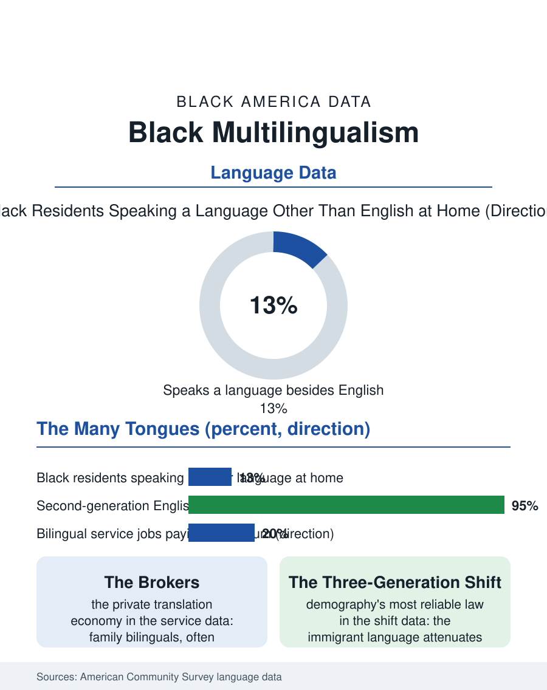

Black Census
Many Tongues: Black America's Multilingual Households
One in eight Black residents speaks another language at home, Creole to Amharic to Yoruba, with a family translation economy and a three-generation shift under way. The multilingual file.

Black America speaks in many tongues. Roughly one in eight Black residents speaks a language other than English at home, French and Haitian Creole, Spanish, Amharic, Yoruba, Somali, Portuguese, and dozens more, a linguistic map that traces the immigrant streams this atlas has followed from the Caribbean and Africa into the gateways and the new destinations. This article reads the multilingual file.
The Language Map
The census language data draw the map by stream. Haitian Creole anchors the French-language bloc in South Florida and the Northeast, the legacy of the Haitian migration's half century; Spanish marks the Afro-Latino population and the Dominican and Panamanian streams; the African languages, Amharic in Washington and Seattle, Somali in Minneapolis and Columbus, Yoruba and Igbo in Houston and the suburbs of a dozen metros, register the newest migration's geography with a precision the country-of-birth tables blur. Beneath the immigrant layer sits the native-born linguistic heritage: the Creole and Gullah traditions covered elsewhere in this atlas, the Louisiana French of the Creole parishes, fading across the generations the language-shift data record, and African American English itself, the dialect whose documentation this atlas treats under its own file, a variety of English rather than a separate language in the bureau's classification, carrying the same identity weight in its speakers' lives that the immigrant languages carry in theirs. English proficiency within the immigrant layer follows the universal gradient of the migration literature, near-universal in the second generation, rising with residence duration in the first, with the elder arrivals, the grandparents who followed their children, holding the lowest proficiency and the highest dependence on the household's bilingual brokers, frequently their own school-age grandchildren.
Brokers, Services, and the Translation Economy
The multilingual household runs a private translation economy the service systems lean on heavily. The language access obligations of federal law, the interpreters the hospitals and courts must provide, are met in practice by a mixed system of professional interpreters, the workforce of this atlas's interpreters file, telephone language lines, and the family's own bilinguals, with the survey and audit literature documenting the gaps, the medical encounter conducted through a twelve-year-old, the benefits notice never translated, that the formal system leaves. Schools carry the largest daily load: the English learner programs serving immigrant Black children operate inside districts whose language services were designed for the Spanish-speaking majority of the learner population, and the Creole and African language speakers' access to materials and assessments in their languages is the thinnest layer of an already stretched system, a gap the education data register in the newest arrivals' first-year outcomes. The labor market pays for the skill it under-provides: bilingual Black workers command the service economy's bilingual premiums, the hospital, the agency, and the call center paying differentials for Creole, French, and Spanish that the wage data can sometimes catch, while the heritage languages' maintenance, the Saturday schools, the churches conducting services in Amharic and French, the media ecosystems of the streaming era, constitute the cultural infrastructure deciding whether the third generation keeps the household's second tongue or completes the classic three-generation shift to English only.
What the Shift Takes and Leaves
The language shift is demography's most reliable law: the immigrant language, however vigorously maintained, attenuates by the third generation in every stream ever measured, and the Black streams are obeying it on schedule, the second generation bilingual and English-dominant, the third largely English-only with a heritage residue of phrases, foods, and songs. What the shift leaves behind is the interesting residue in the linguistic data: the accent and variety features that pass into the local Black English of the destination cities, the Creole substrate in South Florida's, the African languages' contribution to the newest youth vernaculars, language change proceeding in the data exactly as it did when Gullah and Louisiana Creole formed from an earlier era's contact. The multilingual file closes on the household table where three generations negotiate three relationships to the same ancestral tongue, the grandmother's only language, the mother's bridge, the child's heritage elective, a table replicated across the Black immigrant map from Miramar to Minneapolis. The census counts the speakers and projects the shift with confidence. The file's final note is the maintenance institutions' counter-argument, the Saturday school and the streamed sermon and the grandmother herself, who have between them preserved languages across worse disruptions than the American suburb, and whose success rate, while it will not beat the law of the shift, has beaten its timetable often enough to keep the map multilingual for another generation at least.
More in Black Census
The Black Population of the United States: Size, Definitions, and Distribution
The Black population of the United States totals 52.8 million — 15.4 percent of the nation. How the Census Bureau defines and counts the population, and where it lives.
Black Median Household Income in the United States
Black median household income stands at $56,490 in the Census Bureau's annual income report — how the figure is measured, how it compares, and what drives it.
The Black Poverty Rate: Levels, Children, and the Long Trend
The official Black poverty rate is 17.1 percent — against 11.1 percent nationally and 7.7 percent for non-Hispanic White Americans. How poverty is measured and what the data show.
Source: U.S. Census Bureau, American Community Survey language spoken at home and English proficiency data.